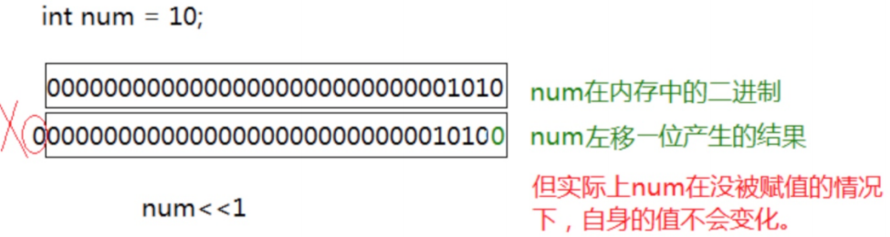
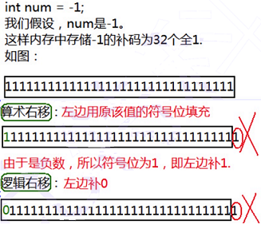
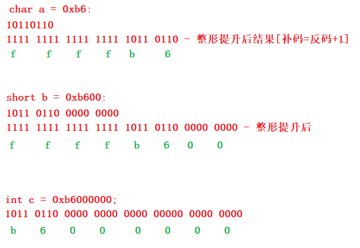
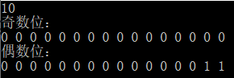

操作符
分类
- 算术操作符
- 移位操作符
- 位操作符
- 赋值操作符
- 单目操作符
- 关系操作符
- 逻辑操作符
- 条件操作符
- 逗号表达式
- 下标引用、函数调用和结构成员
算术操作符
+ - * / %
- 除了 % 操作符之外，其他的几个操作符可以作用于整数和浮点数。
- 对于 / 操作符如果两个操作数都为整数，执行整数除法。而只要有浮点数执行的就是浮点数除法。
- % 操作符的两个操作数必须为整数。返回的是整除之后的余数。
double a = 5 % 2;//商2余1
printf("a = %lf\n", a);//1.000000
移位操作符 ：移动是二进制位，只能作用于整形
<< 左移操作符
>> 右移操作符
左移操作符 移位规则：
**左边抛弃、右边补0**

int a = 5;
int b = a << 1;
//00000000000000000000000000000101
//00000000000000000000000000001010
printf("%d\n", b); //10
右移操作符 移位规则：[右移1位有除2的效果]
首先右移运算分两种：
1. 逻辑移位 左边用0填充，右边丢弃
2. 算术移位 左边用原该值的符号位填充，右边丢弃

int a = 16;
//>> -- 右移操作符
//移动的是二进制位
//00000000000000000000000000010000
int b = a >> 2;
//00000000000000000000000000000100
printf("%d\n", b); //4
int a = -1;
//整数的二进制表示有：原码、反码、补码
//存储到内存的是补码
//10000000000000000000000000000001 - 原码
//11111111111111111111111111111110 - 反码
//11111111111111111111111111111111 - 补码
int b = a >> 1;
printf("%d\n", b); //-1
警告⚠ ： 对于移位运算符，不要移动负数位，这个是标准未定义的。 例如：
int num = 10;
num>>-1;//error
位操作符 : 只能作用于整数
& //按位与
| //按位或
^ //按位异或
- & - 按2进制位与 对应的两个二进位均为1时，结果位才为1 ，否则为0。【补码形式比较】
int a = 3; // 00000000000000000000000000000011
int b = 5; // 00000000000000000000000000000101
int c = a&b; // 00000000000000000000000000000001
printf("%d\n", c);
- | - 按2进制位或 对应的两个二进位有一个为1时，结果位就为1。【补码形式比较】
int a = 3; //00000000000000000000000000000011
int b = 5; //00000000000000000000000000000101
int c = a | b; //00000000000000000000000000000111
printf("%d\n", c);
- ^ 按2进制位异或: 相同为0，相异为1
对应的两个二进位相异时，结果位为1。【补码形式比较】
C++ int a = 3; //00000000000000000000000000000011 int b = 5; //00000000000000000000000000000101 int c = a ^ b; //00000000000000000000000000000110 printf("%d\n", c);
赋值操作符
int weight = 120;//体重
weight = 89;//不满意就赋值
double salary = 10000.0;
salary = 20000.0;//使用赋值操作符赋值。
赋值操作符可以连续使用，比如：
int a = 10;
int x = 0;
int y = 20;
a = x = y+1;//连续赋值,避免使用 a=x=21
复合赋值符
+=
-=
*=
/=
%=
>>=
<<=
&=
|=
^=
单目操作符
! 逻辑反操作
- 负值
+ 正值
& 取地址
sizeof 操作数的类型长度（以字节为单位）
~ 对一个数的二进制按位取反
-- 前置、后置--
++ 前置、后置++
* 间接访问操作符(解引用操作符)
(类型) 强制类型转换
sizeof和数组
int a = 10;
char c = 'r';
char *p = &c;
int arr[10] = {0};
//sizeof 计算的变量所占内存空间的大小，单位是字节
printf("%d\n", sizeof a); //4
printf("%d\n", sizeof(int)); //4
printf("%d\n", sizeof(c)); //1
printf("%d\n", sizeof(char)); //1
printf("%d\n", sizeof(p)); //4
printf("%d\n", sizeof(char *)); //4
printf("%d\n", sizeof(arr)); //40
printf("%d\n", sizeof(int[10])); //40
sizeof 内部的表达式不参与运算
short s = 0;
int a = 10;
printf("%d\n", sizeof(s = a + 5)); //2
printf("%d\n", s); //0
练习
void test1(int arr[])
{
printf("%d\n", sizeof(arr)); //(2) 4/8
}
void test2(char ch[])
{
printf("%d\n", sizeof(ch)); //(4) 4/8
}
int main()
{
int arr[10] = {0};
char ch[10] = {0};
printf("%d\n", sizeof(arr)); //(1) 40
printf("%d\n", sizeof(ch)); //(3) 10
test1(arr); //传参是首元素地址，指针的大小4/8
test2(ch); //传参是首元素地址,指针的大小4/8
return 0;
}
~ 按位取反
int a = 0;
//~ 按（2进制）位取反
//00000000000000000000000000000000 - 原码 0
//11111111111111111111111111111111 - 补码
//11111111111111111111111111111110 - 反码 -1
//10000000000000000000000000000001 - 原码
//-1
printf("%d\n", ~a);
int a = 11;
a = a | (1 << 2);
printf("%d\n", a); //15
a = a & (~(1 << 2));
printf("%d\n", a); //11
//0000000000000000000000000000001011 - 11
//0000000000000000000000000000000100 - (1 << 2)
//0000000000000000000000000000000001 - 1
//
//0000000000000000000000000000001111 - 或 结果
//1111111111111111111111111111111011 - ~(1 << 2)
//0000000000000000000000000000000100
//0000000000000000000000000000001011 - 且 结果
++和–运算符
int a = 10;
//printf("%d\n", ++a);//前置++，先++，后使用
printf("%d\n", a++);//后置++，先使用，再++
（类型）
int a = (int)3.14;
//int a = int(3.14);//err
关系操作符
>
>=
<
<=
!= 用于测试“不相等”
== 用于测试“相等
警告： 在编程的过程中== 和=不小心写错，会导致的错误。
逻辑操作符
&& 逻辑与
|| 逻辑或
&& 逻辑与：两个条件都同时成立的情况下“逻辑与”的运算结果才为“真”。
- 当逻辑与左边为false(假)，则不再进行逻辑与右边的判断，结果为false(假)
- 当逻辑与左边为true(真)则进行右边判断，右边为false(假)，结果为false(假)
- 当逻辑与左边为true(真)则进行右边判断，右边也为true(真)，则结果为true(真)
|| 逻辑或：任一或多个条件成立的情况下“逻辑或”的运算才为“真”。
- 当逻辑或左边为false(假)，继续逻辑或右边的判断，如果也为false(假)，结果为false(假)
- 当逻辑或左边为false(假)，继续逻辑或右边的判断，如果为true(真)，结果为true(真)
- 当逻辑或左边为true(真)，则不再进行逻辑或右边的判断，结果为true(真)
区分逻辑与和按位与 区分逻辑或和按位或
1&2----->0
1&&2---->1
1|2----->3
1||2---->1
//00000000000000000000000000000001 -1
//00000000000000000000000000000010 -2
//00000000000000000000000000000000 -1&2
//00000000000000000000000000000011 -1|2
int i = 0, a = 0, b = 2, c = 3, d = 4;
i = a++ && ++b && d++; //a++ 是后置++，先使用再++。a=0 为假，后面不管是什么都不算了，a++
printf(" a = %d\n b = %d\n c = %d\n d = %d\n", a, b, c, d); //1 2 3 4
int i = 0, a = 1, b = 2, c = 3, d = 4;
i = a++ && ++b && d++;//a=1为真，a++,++b是前置++，先加在使用，b=3为真，d=4为真，d++
printf(" a = %d\n b = %d\n c = %d\n d = %d\n", a, b, c, d); //2 3 3 5
int i = 0, a = 0, b = 2, c = 3, d = 4;
i = a++ || ++b || d++; //a=0为假，a++,b++,b=3为真，结束
printf(" a = %d\n b = %d\n c = %d\n d = %d\n", a, b, c, d); //1 3 3 4
int i = 0, a = 1, b = 2, c = 3, d = 4;
i = a++ || ++b || d++; //a=1为真，结束。a++
printf(" a = %d\n b = %d\n c = %d\n d = %d\n", a, b, c, d); //2 2 3 4
条件操作符
exp1 ? exp2 : exp3
if (a > 5)
b = 3;
else
b = -3;
b = (a > 5 ? 3 : -3);
int a = 10;
int b = 20;
int max = 0;
if (a > b)
max = a;
else
max = b;
max = (a > b ? a : b);
逗号表达式
exp1, exp2, exp3, …expN
逗号表达式，就是用逗号隔开的多个表达式。 逗号表达式，从左向右依次执行。整个表达式的结果是最后一个表达式的结果。
//代码1
int a = 1;
int b = 2;
int c = (a > b, a = b + 10, a, b = a + 1); //逗号表达式，c=13
//代码2
if (a = b + 1, c = a / 2, d > 0)
//代码3
a = get_val();
count_val(a);
while (a > 0)
{
//业务处理
a = get_val();
count_val(a);
}
//如果使用逗号表达式，改写:
while (a = get_val(), count_val(a), a > 0)
{
//业务处理
}
下标引用、函数调用和结构成员
[]下标引用操作符 操作数：一个数组名+一个索引值
int arr[10];//创建数组 arr[9] = 10;//实用下标引用操作符。 [ ]的两个操作数是arr和9。( ) 函数调用操作符 接受一个或者多个操作数：第一个操作数是函数名，剩余的操作数就是传递给函数的参数。
void test1() { printf("hehe\n"); } void test2(const char *str) { printf("%s\n", str); } int main() { test1(); //实用（）作为函数调用操作符。 test2("hello world.");//实用（）作为函数调用操作符。 return 0; }访问一个结构的成员
. 结构体.成员名 -> 结构体指针->成员名//创建一个结构体类型-struct Stu struct Stu { //成员变量 char name[20]; int age; char id[20]; }; int main() { //使用struct Stu这个类型创建了一个学生对象s1，并初始化 struct Stu s1 = {"张三", 20, "2019010305"}; struct Stu *ps = &s1; printf("%s\n", ps->name); printf("%d\n", ps->age); //结构体指针->成员名 /*printf("%s\n", (*ps).name); printf("%d\n", (*ps).age);*/ /*printf("%s\n", s1.name); printf("%d\n", s1.age); printf("%s\n", s1.id);*/ //结构体变量.成员名 return 0; }
表达式求值
表达式求值的顺序一部分是由操作符的优先级和结合性决定。 同样，有些表达式的操作数在求值的过程中可能需要转换为其他类型。
隐式类型转换
C的整型算术运算总是至少以缺省整型类型的精度来进行的。
为了获得这个精度，表达式中的字符和短整型操作数在使用之前被转换为普通整型，这种转换称为整型提升。
整型提升的意义：
表达式的整型运算要在CPU的相应运算器件内执行，CPU内整型运算器(ALU)的操作数的字节长度一般就是int的字节长度，同时也是CPU的通用寄存器的长度。
因此，即使两个char类型的相加，在CPU执行时实际上也要先转换为CPU内整型操作数的标准长度。
通用CPU（general-purpose CPU）是难以直接实现两个8比特字节直接相加运算（虽然机器指令中可能有这种字节相加指令）。所以，表达式中各种长度可能小于int长度的整型值，都必须先转换为int或unsigned int，然后才能送入CPU去执行运算。
负数的整形提升
char c1 = -1;
变量c1的二进制位(补码)中只有8个比特位：
1111111
因为 char 为有符号的 char
所以整形提升的时候，高位补充符号位，即为1
提升之后的结果是：
11111111111111111111111111111111 - 补码=反码+1
11111111111111111111111111111110 - 反码
10000000000000000000000000000001 - 原码
正数的整形提升
char c2 = 1;
变量c2的二进制位(补码)中只有8个比特位：
00000001
因为 char 为有符号的 char
所以整形提升的时候，高位补充符号位，即为0
提升之后的结果是：
00000000000000000000000000000001
无符号整形提升，高位补0
两个整形提升的变量如何相加
char a = 3;
//00000000000000000000000000000011
//00000011 - a
//
char b = 127;
//00000000000000000000000001111111
//01111111 - b
//a和b如何相加
//00000000000000000000000000000011
//00000000000000000000000001111111
//00000000000000000000000010000010
//
char c = a + b;
//10000010 - c
//11111111111111111111111110000010 - 补码 有符号数补1，无符号数补0
//11111111111111111111111110000001 - 反码 =补码-1
//10000000000000000000000001111110 - 原码
//-126
printf("%d\n", c);
整体提升
整形提升是按照变量的数据类型的符号位来提升的
整形提升的例子
// 实例1:
//a,b要进行整形提升,但是c不需要整形提升 a,b整形提升之后,变成了负数
//c不发生整形提升,则表达式 c==0xb6000000 的结果是真
int main()
{
char a = 0xb6; //10110110
short b = 0xb600;
int c = 0xb6000000;
if (a == 0xb6)
printf("a");
if (b == 0xb600)
printf("b");
if (c == 0xb6000000)
printf("c"); //C
return 0;
}

//实例2
//c只要参与表达式运算,就会发生整形提升,表达式 +c ,就会发生提升,所以 sizeof(+c) 是4个字节.
//表达式 -c 也会发生整形提升,所以 sizeof(-c) 是4个字节,但是 sizeof(c) ,就是1个字节
int main()
{
char c = 1;
printf("%u\n", sizeof(c)); //1
printf("%u\n", sizeof(+c)); //4
printf("%u\n", sizeof(!c)); //1
return 0;
}
算术转换
如果某个操作符的各个操作数属于不同的类型，那么除非其中一个操作数的转换为另一个操作数的类型，否则操作就无法进行。下面的层次体系称为寻常算术转换.
long double
double
float
unsigned long int
long int
unsigned int
int
如果某个操作数的类型在上面这个列表中排名较低，那么首先要转换为另外一个操作数的类型后执行运算。
警告： 但是算术转换要合理，要不然会有一些潜在的问题。
float f = 3.14;
int num = f;//隐式转换，会有精度丢失
操作符的属性
复杂表达式的求值有三个影响的因素。 1. 操作符的优先级 2. 操作符的结合性 3. 是否控制求值顺序。
两个相邻的操作符先执行哪个？取决于他们的优先级。如果两者的优先级相同，取决于他们的结合性。
操作符优先级【越靠前，优先级越高】
| 操作符 | 描述 | 用法示例 | 结果类型 | 结合性 | 是否控制求值顺序 |
|---|---|---|---|---|---|
| （） | 聚组 | （表达式） | 与表达式同 | N/A | 否 |
| （） | 函数调用 | rexp （ rexp ，…, rexp ） | rexp | L-R | 否 |
| [ ] | 下标引用 | rexp [ rexp ] | lexp | L-R | 否 |
| . | 访问结构成员 | lexp .member_name | lexp | L-R | 否 |
| -> | 访问结构指针成员 | rexp ->member_name | lexp | L-R | 否 |
| ++ | 后缀自增 | lexp ++ | rexp | L-R | 否 |
| – | 后缀自减 | lexp – | rexp | L-R | 否 |
| ! | 逻辑反 | ! rexp | rexp | R-L | 否 |
| ~ | 按位取反 | ~ rexp | rexp | R-L | 否 |
| + | 单目，表示正值 | + rexp | rexp | R-L | 否 |
| - | 单目，表示负值 | - rexp | rexp | R-L | 否 |
| ++ | 前缀自增 | ++ lexp | rexp | R-L | 否 |
| – | 前缀自减 | – lexp | rexp | R-L | 否 |
| * | 间接访问 | * rexp | lexp | R-L | 否 |
| & | 取地址 | & lexp | rexp | R-L | 否 |
| sizeof | 取其长度，以字节表示 | sizeof rexp sizeof(类型) | rexp | R-L | 否 |
| (类型） | 类型转换 | (类型) rexp | rexp | R-L | 否 |
| * | 乘法 | rexp * rexp | rexp | L-R | 否 |
| / | 除法 | rexp / rexp | rexp | L-R | 否 |
| % | 整数取余 | rexp % rexp | rexp | L-R | 否 |
| + | 加法 | rexp + rexp | rexp | L-R | 否 |
| - | 减法 | rexp - rexp | rexp | L-R | 否 |
| << | 左移位 | rexp << rexp | rexp | L-R | 否 |
| >> | 右移位 | rexp >> rexp | rexp | L-R | 否 |
| > | 大于 | rexp > rexp | rexp | L-R | 否 |
| >= | 大于等于 | rexp >= rexp | rexp | L-R | 否 |
| < | 小于 | rexp < rexp | rexp | L-R | 否 |
| <= | 小于等于 | rexp <= rexp | rexp | L-R | 否 |
| == | 等于 | rexp == rexp | rexp | L-R | 否 |
| != | 不等于 | rexp != rexp | rexp | L-R | 否 |
| & | 位与 | rexp & rexp | rexp | L-R | 否 |
| ^ | 位异或 | rexp ^ rexp | rexp | L-R | 否 |
| || | 位或 | rexp || rexp | rexp | L-R | 否 |
| && | 逻辑与 | rexp && rexp | rexp | L-R | 是 |
| || | 逻辑或 | rexp || rexp | rexp | L-R | 是 |
| ?: | 条件操作符 | rexp ? rexp : rexp | rexp | N/A | 是 |
| = | 赋值 | lexp = rexp | rexp | R-L | 否 |
| += | 以…加 | lexp += rexp | rexp | R-L | 否 |
| -= | 以…减 | lexp -= rexp | rexp | R-L | 否 |
| *= | 以…乘 | lexp *= rexp | rexp | R-L | 否 |
| /= | 以…除 | lexp /= rexp | rexp | R-L | 否 |
| %= | 以…取模 | lexp %= rexp | rexp | R-L | 否 |
| <<= | 以…左移 | lexp <<= rexp | rexp | R-L | 否 |
| >>= | 以…右移 | lexp >>= rexp | rexp | R-L | 否 |
| &= | 以…与 | lexp &= rexp | rexp | R-L | 否 |
| ^= | 以…异或 | lexp ^= rexp | rexp | R-L | 否 |
| |= | 以…或 | lexp = rexp | rexp | R-L | 否 |
| ， | 逗号 | rexp ， rexp | rexp | L-R | 是 |
问题表达式
表达式的求值部分由操作符的优先级决定。
表达式1
a*b + c*d + e*f代码1在计算的时候，由于比+的优先级高，只能保证，的计算是比+早，但是优先级并不能决定第三个*比第一个+早执行。
计算机顺序可能是
a*b c*d a*b + c*d e*f a*b + c*d + e*f 或者： a*b c*d e*f a*b + c*d a*b + c*d + e*f表达式2
c + --c;同上，操作符的优先级只能决定自减 “–” 的运算在+的运算的前面，但是我们并没有办法得知，+操作符的左操作数的获取在右操作数之前还是之后求值，所以结果是不可预测的，是有歧义的。
表达式3-非法表达式：表达式3在不同编译器中测试结果不同
int main() { int i = 10; i = i-- - --i * ( i = -3 ) * i++ + ++i; printf("i = %d\n", i); return 0; }表达式4
//answer = fun() - fun() * fun(); 中我们只能通过操作符的优先级得知：先算乘法，再算减法。 //函数的调用先后顺序无法通过操作符的优先级确定 int fun() { static int count = 1; return ++count; } int main() { int answer; answer = fun() - fun() * fun(); printf( "%d\n", answer);//输出多少？ return 0; }表达式5
//代码5 #include <stdio.h> int main() { int i = 1; int ret = (++i) + (++i) + (++i); printf("%d\n", ret); printf("%d\n", i); return 0; }linux 环境gcc编译器 :10 4
VS2013环境下都执行 :12 4
第一个 + 在执行的时候，第三个++是否执行，这个是不确定的，因为依靠操作符的优先级和结合性是无法决定第一个 + 和第三个前置 ++ 的先后顺序。
总结 我们写出的表达式如果不能通过操作符的属性确定唯一的计算路径，那这个表达式就是存在问题的。
练习
题目1
#include <stdio.h>
int i;//全局变量-不初始化-默认是0。如果为局部变量为随机值
int main()
{
i--;
//-1
//10000000000000000000000000000001 - 原码
//11111111111111111111111111111110 - 反码（符号位不变，其余取反）
//11111111111111111111111111111111 - 补码 （反码+1）
//放在内存里是补码，但高位就不再是符号位，一个超大数
//因为sizeof 返回的是无符号数，所以将i也转变成无符号数，i的最高位将不是符号位，而是有效位
if (i > sizeof(i))//sizeof()-计算变量/类型所占内存的大小 >=0 无符号数
{
printf(">\n");//>
}
else
{
printf("<\n");
}
return 0;
}
题目2
int a, b, c;
a = 5;
c = ++a;// c=6 a=6
b = ++c, c++, ++a, a++;//c=7 ,c=8 ,a=7,b=7,a=8
b += a++ + c;//a=8,c=8,b=7,b=7+8+8=23,a=9
printf("a = %d b = %d c = %d\n:", a, b, c);//9 23 8
统计二进制中1的个数【补码的二进制有几个1】
写一个函数返回参数二进制中1的个数
比如：15 00001111 4个1
- 主函数
#include <stdio.h>
#include <stdlib.h>
int main()
{
int a = 0;
scanf("%d", &a);
//写一个函数求a的二进制（补码）表示中有几个1
int count = count_bit_one(a);
printf("count = %d\n", count);
//system("pause");//system库函数-执行系统命令-pause（暂停）
return 0;
}
count_bit_one 法一
//13 //000000000000000000000000000001101 //-1 //100000000000000000000000000000001 原码 //111111111111111111111111111111110 反码 //111111111111111111111111111111111 补码 int count_bit_one(unsigned int n) // 无符号，解决负数 { int count = 0; while (n) { if (n % 2 == 1) { count++; } n = n / 2; } return count; }count_bit_one 法二
// -1 //111111111111111111111111111111111 补码 //000000000000000000000000000000001 int count_bit_one(int n) { int count = 0; int i = 0; for (i = 0; i < 32; i++) { if (((n >> i) & 1) == 1)// 每一位移到最低位，按位与1 { count++; } } return count; }count_bit_one法三（最佳，高效）//n = n&(n-1) //n //13 //1101 n count++ //1100 n-1 //1100 n count++ //1011 n-1 //1000 n count++ //0111 n-1 //0000 n 跳出 int count_bit_one(int n) { int count = 0; while (n) { n = n & (n - 1); count++; } return count; }
求二进制中不同位的个数
两个int (32位)的整数m和n的二进制表达中有多少个位（bit）不同？
输入例子：1999 2299
输出例子：7
#include <stdio.h>
int get_diff_bit(int m, int n)
{
int tmp = m^n;// ^ 按位异或同为0,相异为1
int count = 0;
//return count_bit_one(tmp);
while (tmp)
{
tmp = tmp&(tmp - 1);
count++;
}
return count;
}
int main()
{
int m = 0;
int n = 0;
scanf("%d%d", &m, &n);
int count = get_diff_bit(m, n);
printf("count = %d\n", count);
return 0;
}
打印二进制的奇数位和偶数位
获取一个整数二进制序列中所有的偶数位和奇数位，分别打印出二进制序列
#include <stdio.h>
//00000000000000000000000000001010
void print(int m)
{
int i = 0;
printf("奇数位：\n");
for (i = 30; i >= 0; i -= 2)
{
printf("%d ", (m >> i) & 1);
}
printf("\n");
printf("偶数位：\n");
for (i = 31; i >= 1; i -= 2)
{
printf("%d ", (m >> i) & 1);
}
printf("\n");
}
int main()
{
int m = 0;
scanf("%d", &m);
print(m);
return 0;
}

交换两个变量（不创建临时变量）
不允许创建临时变量，交换两个整数的内容
临时变量
int a = 3; int b = 5; int tmp = 0;//临时变量 printf("before: a=%d b=%d\n", a, b); tmp = a; a = b; b = tmp;加减法-可能会溢出
int a = 3; int b = 5; a = a + b; //8 b = a - b; //3 a = a - b; //5异或的方法
int a = 3; //011 int b = 5; //101 a = a^b; //110 b = a^b; //011 a = a^b; //101